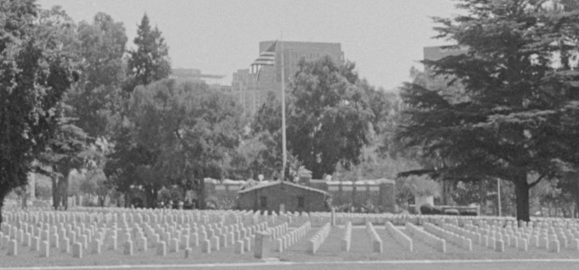
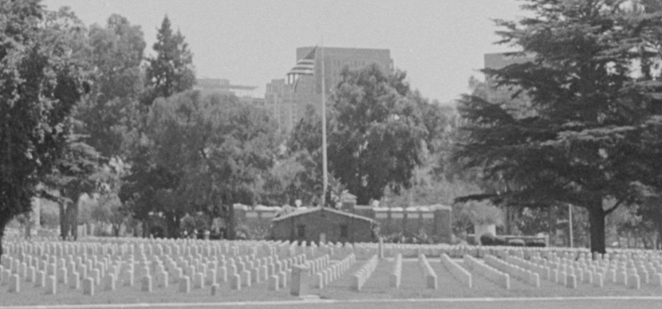

there is HONOR in DEATH

there is safety,

grace,
and the appropriate reverence to be found

in this space of peace, insulated from the violent roar.
there is safety,
grace,
and the appropriate reverence to be found
in this space of peace, insulated from the violent roar.


[...] Over the past five decades, the West LA VA has been
infected by bribery, corruption, and the influence of the powerful and their lobbyists,
and
enabled by a major educational institution in excluding veterans’ input about their own lands.
It has allowed the drastic reduction of the size of the original plot of land deeded in 1888 to be an Old Soldiers’ Home.
In a series of lengthy, renewable leases, the VA authorized leaseholders to build permanent athletic facilities after permitting these concrete structures to be built on veterans’ land,
the VA now points to the waste that would be incurred by tearing them down. In effect, the VA has quietly sold off these lands just as surely as granting a quitclaim deed.
The VA argues they are out of space, and that the lack of available acreage precludes any increase to the 1,200 units they have promised to open on the West LA campus by 2030."
- Federal Judge David O. Carter, September 6th, 2024

 don't answer
don't answer

this place is not home
 go
go


they'll disappear
*(UCLA Housing Voice Episode 67)